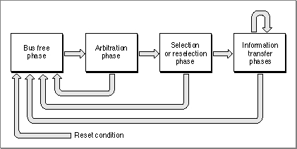

Introduction to SCSI Concepts
The Small Computer System Interface (SCSI) is a computer industry standard for connecting computers to peripheral devices such as hard disk drives, CD-ROM drives, printers, scanners, magnetic tape drives, and any other device that needs to transfer large amounts of data quickly.The SCSI standard specifies the hardware and software interface at a level that minimizes dependencies on any specific hardware implementation. The specification allows a wide variety of peripheral devices to be connected to many types of computers.
A SCSI bus is a bus that conforms to the physical and electrical specifications of the SCSI standard. A SCSI device refers to any unit connected to the SCSI bus, either a peripheral device or a computer. Each SCSI device on the bus is assigned a SCSI ID, which is an integer value from 0 to 7 that uniquely identifies the device during SCSI transactions. The Macintosh computer is always assigned the SCSI ID value of 7, and its internal hard disk drive is normally assigned the SCSI ID value of 0. In general, only one Macintosh computer can be connected to a SCSI bus at a given time, and most Macintosh models support only a single SCSI bus.
When two SCSI devices communicate, one device acts as the initiator and the other as the target. The initiator begins a transaction by selecting a target device. The target responds to the selection and requests a command. The initiator then sends a SCSI command, and the target carries out the action. After acknowledging the command, the target controls the remainder of the transaction. The role of initiator and target is fixed for each device, and does not usually change. Under the original SCSI Manager, the Macintosh computer always acts as initiator, and peripheral devices are always targets.
- SCSI Manager 4.3 Note
- Under the original SCSI Manager, the dual SCSI buses in high-performance computers such as the Macintosh Quadra 950 are treated as though they were a single physical bus. SCSI Manager 4.3 supports multiple SCSI buses and treats each bus separately.
SCSI transactions involve interaction between bus signals, bus phases, SCSI commands, and SCSI messages. Although the SCSI Manager masks much of the underlying complexity of SCSI transactions, an understanding of these elements and how they interact will help you understand the role of the SCSI Manager.
- SCSI Manager 4.3 Note
- SCSI Manager 4.3 allows multiple initiators, meaning that intelligent peripheral devices can initiate SCSI transactions without involving the computer.
The following sections briefly summarize the elements of a SCSI transaction.
SCSI Bus Signals
The SCSI specification defines 50 bus signals, half of which are tied to ground. Table 3-1 describes the 18 SCSI bus signals that are relevant to understanding SCSI transactions. Nine of these signals are used to initiate and control transactions, and nine are used for data transfer (8 data bits plus a parity bit).SCSI Bus Phases
A SCSI bus phase is an interval in time during which, by convention, certain control signals are allowed or expected, and others are not. The SCSI bus can never be in more than one phase at any given time.For each of the bus phases, there is a set of allowable phases that can follow. For example, the bus free phase can only be followed by the arbitration phase, or by another bus free phase. A data phase can be followed by a command, status, message, or bus free phase.
Control signals direct the transition from one phase to another. For example, the reset signal invokes the bus free phase, while the attention signal invokes the message phase.
The SCSI standard specifies eight distinct phases for the SCSI bus:
Together, the last four phases (command, data, status, and message) are known as the information transfer phases. Figure 3-1 shows the relationship of the SCSI bus phases.
- Bus free. This phase means that no SCSI devices are using the bus, and that the bus is available for another SCSI operation.
- Arbitration. This phase is preceded by the bus free phase and permits a SCSI device to gain control of the SCSI bus. During this phase, all devices wishing to use the bus assert the /BSY signal and put their SCSI ID onto the bus (using the data signals). The device with highest SCSI ID wins the arbitration.
- Selection. This phase follows the arbitration phase. The device that won arbitration uses this phase to select another device to communicate with.
- Reselection. This optional phase is used by systems that allow peripheral devices to disconnect and reconnect from the bus during lengthy operations. This phase is not supported by the original Macintosh SCSI Manager, but is by SCSI Manager 4.3.
- Command. During this phase, the target requests a command from the initiator.
- Data. The data phase occurs when the target requests a transfer of data to or from the initiator.
- Status. This phase occurs when the target requests that status information be sent to the initiator.
- Message. The message phase occurs when the target requests the transfer of a message. Messages are small blocks of data that carry information or requests between the initiator and a target. Multiple messages can be sent during this phase.
Figure 3-1 SCSI bus phases and allowable transitions[Missing image]

SCSI Commands
A SCSI command is an instruction from an initiator to a target to conduct an operation, such as reading or writing a block of data. Commands are read by the target when it is ready to do so, as opposed to being sent unrequested by the initiator.SCSI commands are contained in a data structure called a command descriptor block (CDB), which can be 6, 10, or 12 bytes in size. The first byte specifies the operation requested, and the remaining bytes are parameters used by that operation.
A single SCSI command may cause a peripheral device to undertake a relatively large amount of work, compared with other device interfaces. For example, the read command can specify multiple blocks of data rather than just one. The primary difference between the SCSI protocol and other interfaces typically used for storage devices is that SCSI commands address a device as a series of logical blocks rather than in terms of heads, tracks, and sectors. It is this abstraction from the physical characteristics of the device that allows the SCSI protocol to be used with a wide variety of devices.
SCSI Messages
The SCSI standard specifies a number of possible messages between initiator and target. SCSI messages are small blocks of data, often just one byte in size, that indicate the successful completion of an operation (the command complete message), or a variety of other events, requests, and status information. All messages are sent during the message phase.The command complete message is required in all SCSI implementations. This message is sent from the target to the initiator and indicates that a command (or series of linked commands) has been completed, either successfully or unsuccessfully. Success or failure of the command is indicated by status information sent earlier during the status phase. The importance of the command complete message is more fully discussed in "Using the SCSIComplete Function," beginning on page 3-21.
Other SCSI messages are optional. During the selection phase, the initiator and target each specify their ability to handle messages other than the command complete message.
SCSI Handshaking
The SCSI standard defines the required sequence of transitions of the control and data signals to ensure reliable communication between SCSI devices. Because the request signal (/REQ) and the acknowledge signal (/ACK) both play a major role, this part of the SCSI protocol is often referred to as request/acknowledge handshaking (usually abbreviated as REQ/ACK handshaking).The SCSI information transfer phases use REQ/ACK handshaking to transfer data or control information between the initiator and target, in either direction. The direction of the transfer depends on the particular bus phase. The handshaking occurs on every byte transferred, and constitutes the lowest level of the SCSI protocol.
For example, during the data phase, when a target sends data to the initiator, the target places the data on the SCSI bus data lines and then asserts the /REQ signal. The initiator senses the /REQ signal, reads the data lines, then asserts the /ACK signal. When the target senses the /ACK signal, it releases the data lines and negates the /REQ signal. The initiator then senses that the /REQ signal has been negated, and negates the /ACK signal. After the target senses that the /ACK signal has been negated, it can repeat the whole process again, to transfer another byte of data.
Unless you are designing a SCSI device, you do not need any special knowledge of SCSI handshaking to write software that uses the SCSI Manager. However, a general understanding of SCSI handshaking can be helpful when debugging. Refer to the SCSI specification for complete information about SCSI handshaking, bus phases, commands, and messages.